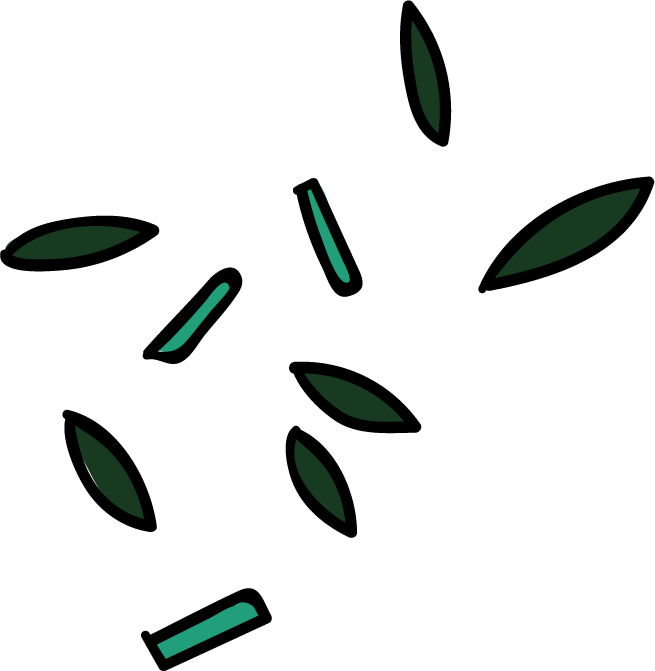
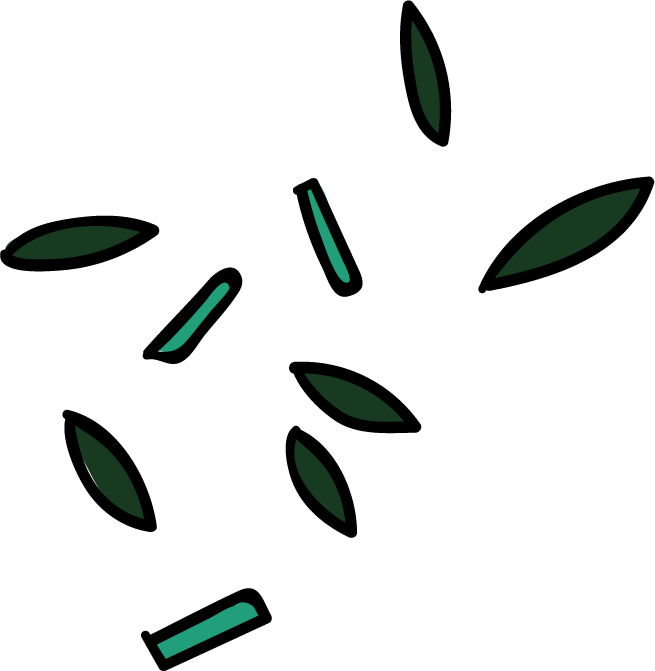
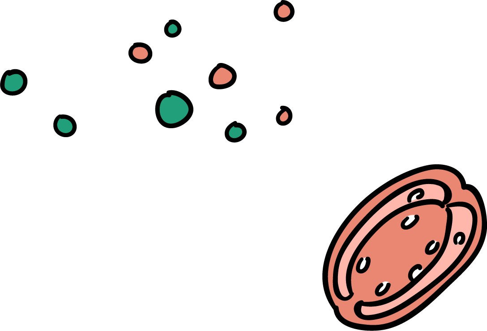
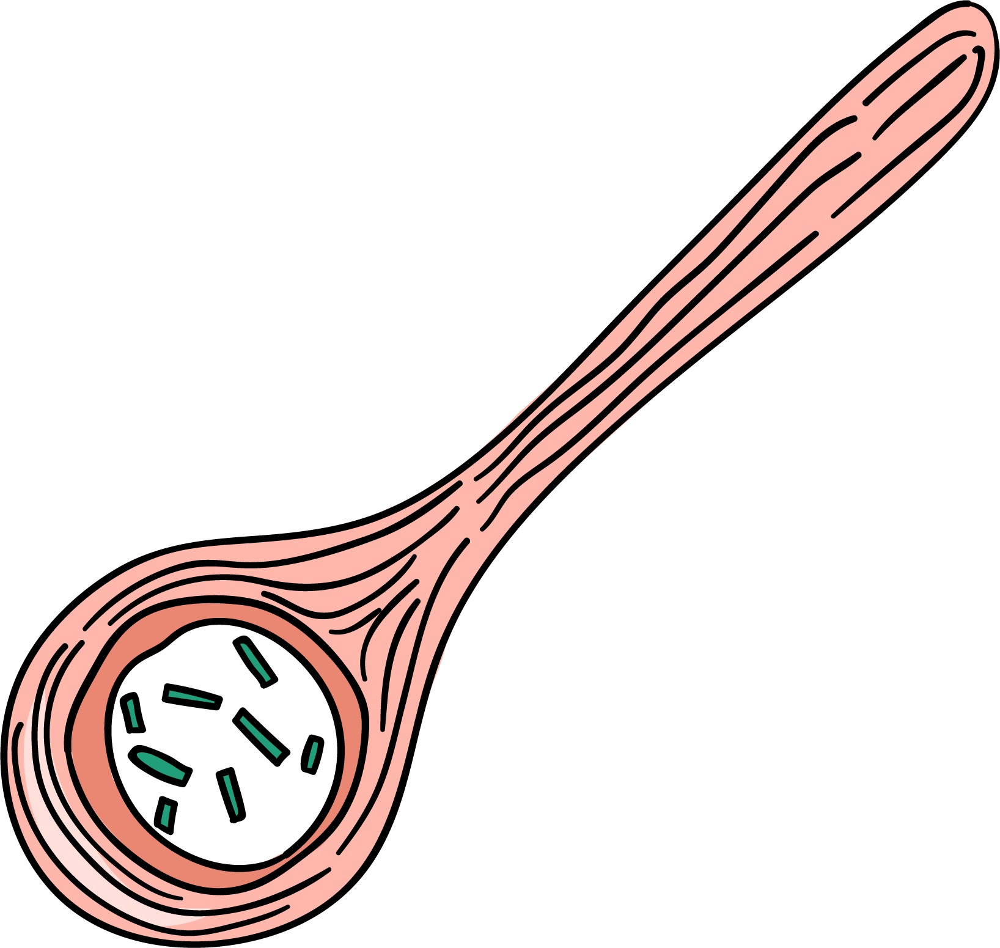
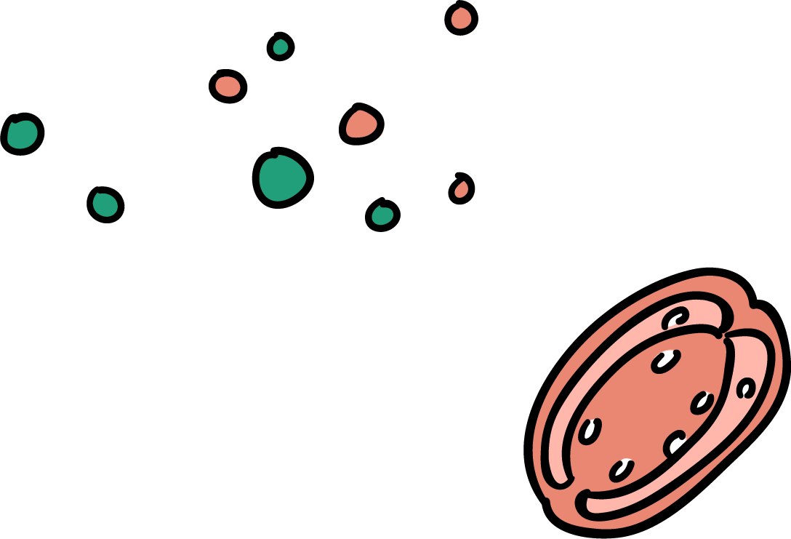
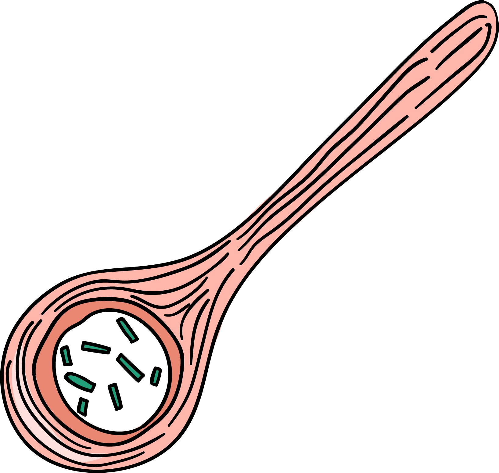

Tụi mình là nhóm các bạn trẻ thích những món ăn ngon, thích đi và tìm hiểu những điều mới lạ xung quanh nơi chúng mình sinh sống và làm việc nhất là về lĩnh vực ẩm thực đường phố, không gì tuyệt vời hơn là ngồi lề đường thưởng thức chúng cũng như cùng nhau uống những ly nước mát cho ngày hè oi bức. Bên cạnh đó, chúng tớ cũng muốn chia sẻ những địa điểm thú vị và kết bạn với mọi người. "Sì-tric FUD" rất vui vẻ và hoà đồng.
 


 



Không sai khi nói rằng: ẩm thực đường phố là một phần không thể thiếu của Sài Gòn. Chính vì vậy mà ẩm thực đường phố dần trở thành một điểm nhấn của thành phố xinh đẹp này, đặc biệt để lại ấn tượng sâu sắc trong lòng du khách quốc tế. Những món ăn rất đỗi bình thường với người Việt như bánh mì, cơm tấm, bún riêu, phở… đều nằm trong danh sách những món ăn đường phố ngon nhất dành cho các những thực khách đam mê “xê dịch” và đã được rất nhiều kênh thông tấn lớn của thế giới như CNN Travel, CNN, National Geographic quảng bá khắp thế giới.


Nếu muốn khám phá ẩm thực Sài Gòn nói riêng và ẩm thực Việt thực sự đúng chất thì không thể bỏ qua các hàng quán vỉa hè. Người Sài Gòn bán đủ thứ trong những gian hàng rong, xe hàng nhỏ khắp các vỉa hè. Món ăn thì gần như có tất tần tật mọi thứ, từ bánh mì, xôi, phá lấu,… cho đến món ăn vặt như bò bía, bánh tráng trộn, bắp xào, bột chiên, chè, thịt xiên, viên chiên, đồ giải khát,… Chỉ cần nơi nào tập trung đông dân cư thì khu đó càng có nhiều quán vỉa hè. Quán ăn vỉa hè bình dị, giá rẻ như vậy mới thực sự là nơi mà người Sài Gòn ghé tới dùng bữa nhiều nhất.